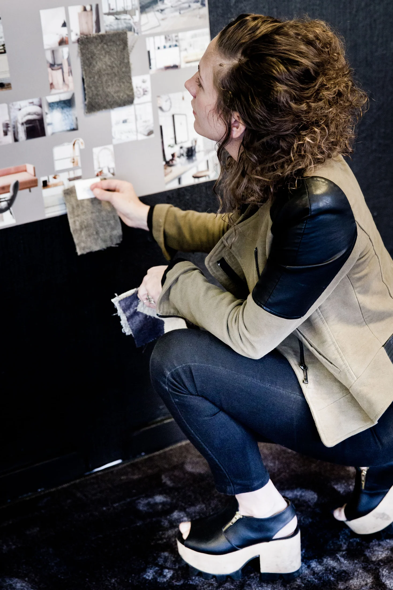

ISELA sedan 2006
ISELA grundades av Patricia Trambevski. Redan från början rymde verksamheten flera sätt att arbeta med estetik och design.
Inredare, formgivare, kläddesigner och föreläsare. Grundare av ISELA och övertygad om att det är samspelet mellan delarna som gör helheten.
Från min bas i Varberg arbetar jag med människor, företag och kreativa projekt – med nyfikenheten som utgångspunkt.
Låt oss lära känna varandraISELA grundades av Patricia Trambevski. Redan från början rymde verksamheten flera sätt att arbeta med estetik och design.
Rummet ska vara mer än vackert att se på. ISELAs helhetstänkande handlar om hur färg, ljus, material och funktion samverkar med människorna som ska leva och arbeta där.
Arbetet med konkreta uppdrag får också ta plats i föreläsningar och workshops, där designprocesser och kreativt tänkande blir möjliga att utforska tillsammans.

En möbel, ett materialprov eller en första tecknad linje kan vara början på något större. I arbetsprocessen möts research, inspiration och praktiska förutsättningar.
Det är också därför de olika delarna av ISELA hänger ihop. Ett perspektiv från mode kan ge en ny tanke i ett rum. En inredningsidé kan leda till en egen produkt.
Se mitt arbeteEtt urval ur ISELAs publicerade referenslista.